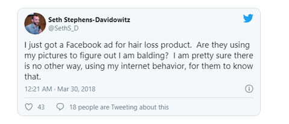
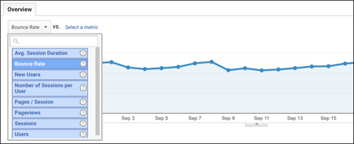
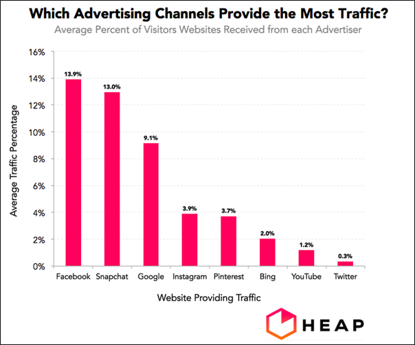

Integrating Facebook advertisements in the marketing strategy of the organization has become one of the popular tactics used by marketers. The craze to reach the global audience is making them implement these promotional tactics. As a marketer, you would have also integrated this practice, but how to analyze, whether a Facebook ad is performing or not?
It is simple with the help of some crucial metrics. Find it below:
1. Increased number of followers on Facebook:
The first step to likeability is liking and sharing your content on Facebook, but what is the next step?
Following the brand!!!!!
It is assumed that when you follow an individual, organization, etc., you like the brand or the content that they are posting on social media. So, when you see the number of followers significantly increasing from 50 to 100 in a few days, be assured that your Facebook ad got an outstanding response from the viewers.
You should be delighted that people are following you, as it also means they are admiring you and have respect for your brand.
Key Takeaway:
Track how many followers you had before the ad. campaign and after the ad. campaign. This way, you can understand whether your ad could make the right impact or not on the user, and implement ad optimization if needed. If also the number does not increase immediately, do not lose hope as some people analyze a lot before following any brand.
2. Demographics:
Demographics cover the age, gender, and specific population across the world, etc. So, when any of the Facebook ads do not work, you should check whether you are missing out on these overlooked but essential points to analyze the performance.
Well, this might sound crazy, but some of the Facebook ads backfired; although the brand targeted the user based on demographics, the promotion was not executed the right way.
The below example is of one such case, where the user got offended:

Key Takeaway:
As you can see, the user was embarrassed by seeing the ad of the hair loss product. He even stated that his profile pictures are being used to understand his needs; as a marketer, you should be careful about promoting your product or service to the user. While he might need that product, but directly reaching out to them to sell these products might hurt them.
Likewise, some of the ads might offend a specific population that is more conservative than the population in western countries. You should check all the aspects at the macro-level and analyze the performance of the ad.
3. How close are you to your users:
Now, this comes from the right engagement process that you have with the user!!!
An interesting and engaging content helps in coming closer to the user, further boosting the performance. As a marketer, you should regularly analyze the engagement metrics of the Facebook ad.
How do you this?
Every time you post your content, you would receive a specific number of shares, likes, dislikes, comments, etc. These reactions from the user are the proof that the audience is viewing your content, and is responding by clicking on likes, dislikes, sharing the content.
Key Takeaway:
While the likes, shares are a positive sign, do not get disheartened by the mammoth number of dislikes. At least, you achieved the mission to reach a broader audience, which would give you more scope to research and understand the high number of dislikes. This would further help improvise your next Facebook campaign.
4. Bounce rate
As known, the bounce rate is the metric that helps us know whether users are spending sufficient quality time viewing the content on the website. The more they spend time viewing different forms of content on your website, the higher the chances of conversion. It also shows that your content could strike the right chord with the user.
Find the below image of a volatile bounce rate:

Just as you can see, the bounce rate is changing every day.
You should know that when they are not spending enough time on your website, you are not targeting the right web traffic. Your website should be well-built with the right content so that the user would not only read the content on the page it has landed, but would also move on to the other pages of the website.
Key Takeaway:
Some of the techniques to reduce the bounce rate are improving the navigation across the pages. The majority of the visitors lack patience and hop on to the other site, if they find the current one as not user-friendly. While you want them to stay longer on the website, they would be least interested as the website does not meet their expected standards. Along with that, the content on the website should be relevant and irresistible enough to make them go through the entire one.
For example, you are following a process to target the audience with the content that have pictorial representations like the one in infographics, and the users leave the page, then it indicates they want in-depth content with the right research. You can then segregate the content to target the user with their preferred content.
5. The outreach metric:
100 unique views meaning 100 visitors viewing your content, while 100 views might include the same user viewing your content many times. A certain section of the users who like the content would often view the content many times, thus increasing the number of views.

Key Takeaway:
You have to experiment with new content ideas to reach out to the broader audience and increase the impressions. For example, every time do not post the infographic content, sometimes the PowerPoint content might also work. Acknowledge the audience like a variety of content; the more you showcase your intellect side and creative side simultaneously; they would get impressed with your content forms. The number of views would also increase.
6. The number of click conversions:
The number of conversions also shows whether your Facebook ad is performing or not. Here the conversions do not mean the generated revenue but mean facilitating to increase the revenue.
Why do marketers focus on the number of clicks?
It is seen as a great achievement, when the number of clicks rises. The rise in number also means the marketer could grab the attention of the audience and make them click on the link. The clicks are the conversions on the social media, as it is the desired action by the marketer.
Don’t you want to know the right number of clicks that a brand can have?
Well, as per a finding, the results vary for every brand.
The above example is of “Buffer“. The brand found that almost 21% of the visitors to the site were attracted to the logo found on the top of the site. To analyze further, they included the posts related to the clicks at the bottom of every post they posted thereafter. The experiment was a huge success as the number of clicks increased exponentially.
Key Takeaway:
So, implement all trial and error methods to check what increases the conversion rate. A better understanding of this process would surely increase the conversion rate exponentially.
7. ROI calculation:
The return on investment (ROI) is also one of the factors that help analyze the performance of the Facebook ad. While the number of clicks matter, but you should also know whether at the end of the day you could achieve the return on investment.
Achieving a high number of impressions, and the number of clicks, is not enough to achieve the return on investment.
So, how do you calculate the ROI?
Take this example:
As a marketer, you spend around $700 for the Facebook campaign, and in the process, generate only $500 of sales. So, this would be counted as a loss, the ROI was only $0.714, while the investment was a whopping $700.
Key Takeaway:
As a marketer, you should always look to produce a return on investment that would be almost double the amount invested in the campaign. If you follow that process, then it would be seen as a successful campaign.
8. Analyzing and using the CPM and CPC:
These are the most used metrics by marketers. The CPM means the cost per click while the CPM means the cost per mile.
Both help understand whether campaign is on the right track or not!!!
As CPM is the cost you have to pay per 1000 impressions, while CPC is the cost to pay for every click in the campaign, you have to calculate and implement the right strategy to get more of return from the investment.
Key Takeaway:
Any wrong strategy could nosedive your campaign. Most of the marketers prefer the CPM paid ad. campaign if they are sure the traffic is a high-quality one. The one-time investment for 1000 impressions is a fair option if they are running on a tight budget and generate good revenue with the affordable investment.
Conclusion
In the current business scenario, almost every organization is investing heavily in social media marketing. It is also found on an average, companies spend around $4000-$7000 every month on social media marketing, including investing in Facebook advertisements.
So, as a marketer, it’s your responsibility to know which of the advertisements on “Facebook are working” and “which are not working.” The process would further help you refine the marketing process and strategy and be on the right path to generate excellent business results.
About the author
Robert Jordan, a seasoned marketing professional with over 10 years of experience, currently working as Media Relations Manager at InfoClutch Inc, a company which provides technology database including AWS customers list & many more technologies along with other services like targeted email list etc. Have expertise in setting up the lead flow for budding startups and takes it to the next level. Have a deep interest in SEO, SEM & Social Media related discussions. Always open for new ideas & discussions.
Leave a Reply